两段走势的定义：两段上涨或者下跌之间的间隔不超过20分钟。如果超过了。可能就不是这个走势，而是主要走势了。
如果低于5分钟，那么可能算一段走势。
两段走势的分析
两段走势的分析
TOP
上涨的形状决定它的未来
全天分析的例子
正向两段走势很快，反向的两段走势速度很慢
两段走势的转折
用两段走势来填补真空
大的主要走势，常常有小的两段走势做反向调整。
Fed宣布造成上涨趋势第二段大涨
第一浪快速下跌，第二浪缓慢下跌，最后大跌
第一浪快速下跌，第二浪缓慢下跌，最后大跌
TOP
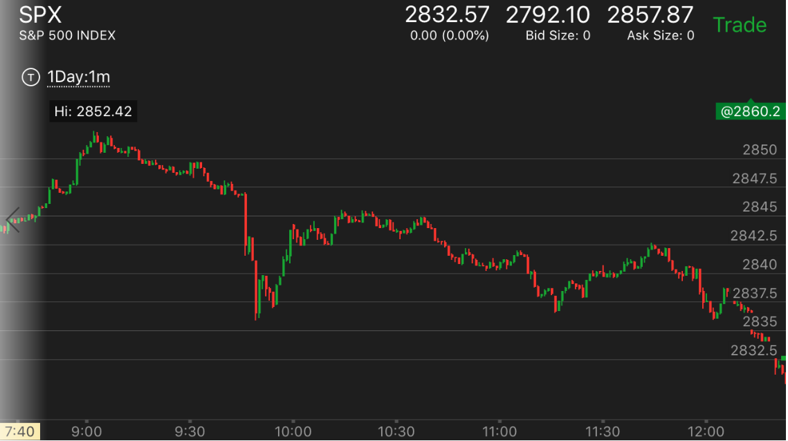
图示：9:50大跌。很快反弹，长时间走平。这样就把下跌快速给给抵消了。它再次缓慢下跌。
应该相信它一定比第一浪低，然而它下跌很慢，所以这样只会跌的更厉害。它在反复测试低点后，大跌。
Fed宣布造成上涨趋势第二段大涨
TOP
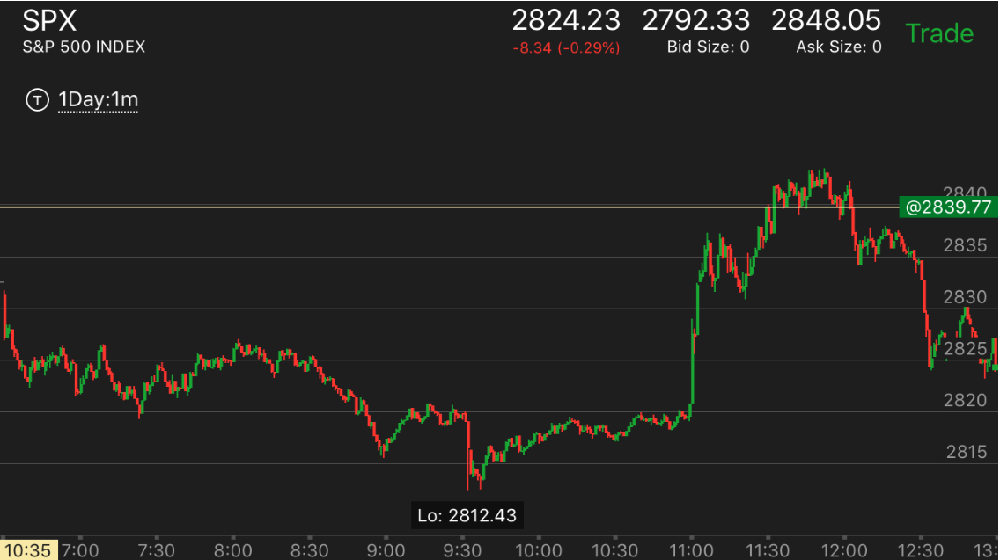
图示：8:30开始的下跌，出现了两段下跌走势，结束。开始缓慢反弹。要看到它是要反的走势是
前面的从2825开始的大跌。所以起码会涨到那里。它的反弹很慢。到了11：00Fed宣布利率。它的第二段走势被引爆。
这个其实也可能冲高后，立刻大跌。可以放一个单子，在2825的地方，立刻卖掉。
大的主要走势，常常有小的两段走势做反向调整。
TOP
两段走势常常分为很多层，在分析的时候，要时刻记住更大的层是否结束。通常升势中的调整，
是一个或者多个小的两段跌势。反之亦然
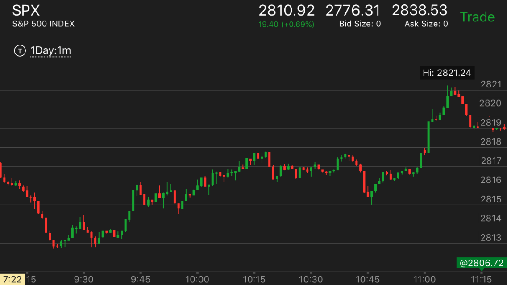
图示：9：40开始了第一次上涨。9：45和9：50出现了一个两段下跌。再次上涨后，它的涨幅不大，
所以不能算两段走势结束。10：15分开始下跌，10：35第二段下跌。加速下跌结束。立刻反弹。可以看到10：50的反弹很弱，
幅度不到前面的涨幅就停止了，开始走平。这个反而是大涨的标志。考虑到前面的升势没有出现第二段。那么这个会大涨。
10：45开始的大涨，就是升势的第二段，然后开始下跌了。
用两段走势来填补真空
TOP
两段走势常常被用来填补真空
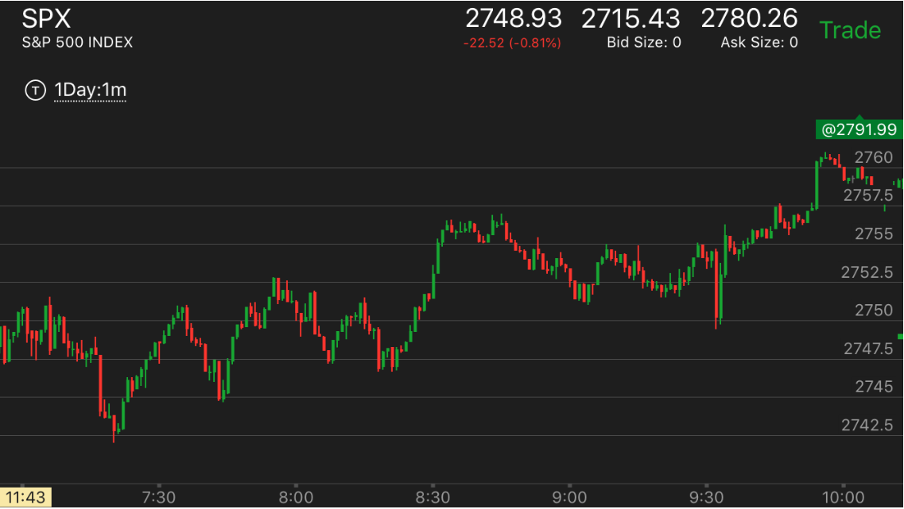
图示：7：30上涨后，7：40开始回调，它也出现了两段走势，虽然只有
10分钟，先是下跌，然后反弹3分钟，再次下跌。第二次下跌虽然只有一个bar，但是显得很激烈。
8：00开始的下跌也是一个回调，也是分为两段，8：00下跌，然后反弹，再次下跌，形成一个双底。
双底恰好也在关键点上。然后再次反弹。8：45的下跌也是一个两段走势。9：30是第二段。立刻就反弹了。
正向两段走势很快，反向的两段走势速度很慢
TOP
这个走势经常发生，一个速度很快，而反转后，速度很慢。这时一定要坚持。它一定会跌破前面的走势的低点的或者
涨破前面的高点。不要轻易平仓。
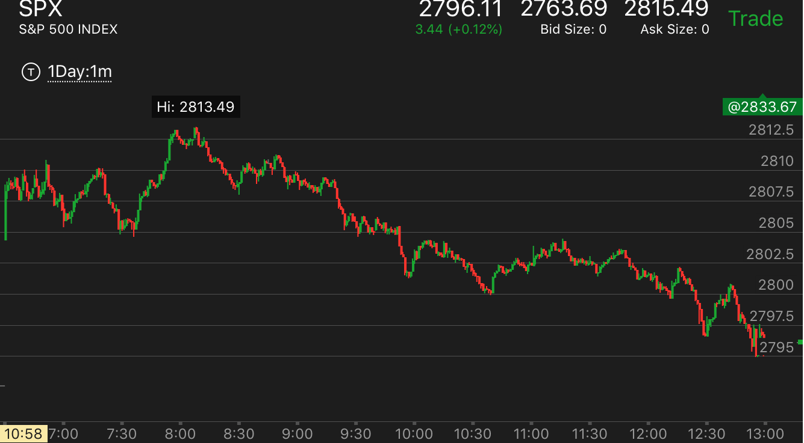
图示：
7：30开始的两段上涨走势，速度很快。结束后，它的反向走势速度很慢。但是不要被它迷惑，
这样的走势反而是跌的更加厉害的走势。也不要被它的很快的反弹所迷惑。要想到这样的走势如果要反弹，一定是非常的慢的，如果很快
说明不对。还会继续下跌的。
9：55开始的反弹，它在底部停留时间很短，只有几分钟，就开始反弹了。反弹的时候，速度很快。这样不会持久的。要想到，前面这样的一个大的主要走势。
一定要有根基才能真的反弹，不然就是为了继续下跌而准备的。10：40的反弹也是如此，在底部停留时间太短，而反弹的速度太快了。
两段走势的转折
TOP
- 大幅运动后，回调或者缓慢运动，再次大幅运动。这样就转折了
- 每次运动后，回调，在某个时候，没有回调，而继续上涨，这样就是顶部了。
- 回调很大，在回调结束的以后，再次运动过程中，出现了运动没有回调的场景。
这样在超过回调点后，也可以算作是到头了。

图示：不算开盘的话，第一段走势8：30开始上涨，回调后，10：30再次大幅上涨。这样就到达了顶部而开始下跌。

图示：9：15开始的上涨，没有回调，就继续上涨了。这个其实是个5浪上涨，然后就开始大跌了。虽然它上涨幅度不大，
但是这个走势本身就是到头了。
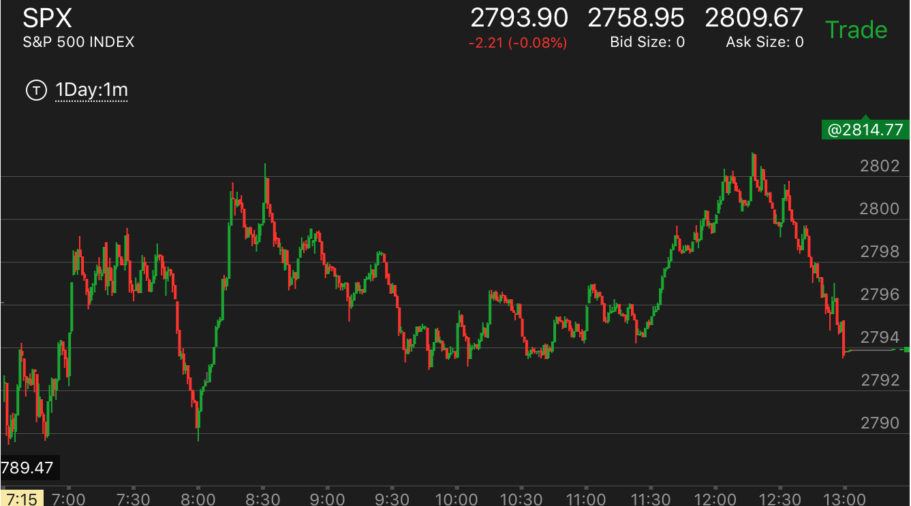
图示：
1. 8：00大幅回调后，它一口气冲高过了前面的高点。但是绝对幅度不大，只比前面的高点高一点点。它中间也没有停顿。这样就不是到头的标志。
2. 11：20开始冲高后，它冲高的时候没有回调，就不断上涨，它一定会超过前面的高点，然后开始走低，两段走势转折了。
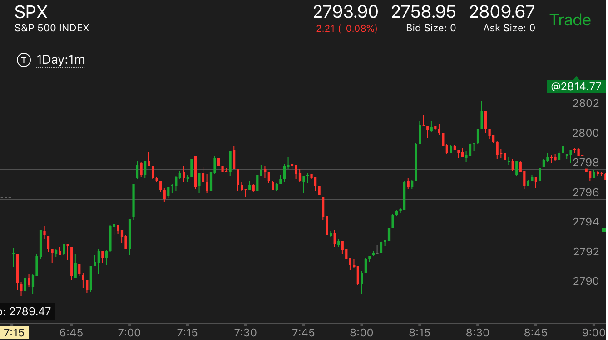
图示：
1. 8：15出现了双峰走势，一个峰更高，但是注意观察，它第二个峰的下跌速度很快。要低于第一个峰。这样就不是顶部的表示。说明没有到头。
正确的方式是，第一个快速回调，第二个很慢回调。这样才是正确的下跌方式。
走势的开始一直缓慢运动，然后快速下跌，这样才是第一浪，然后反弹后，再次下跌，才是第二浪
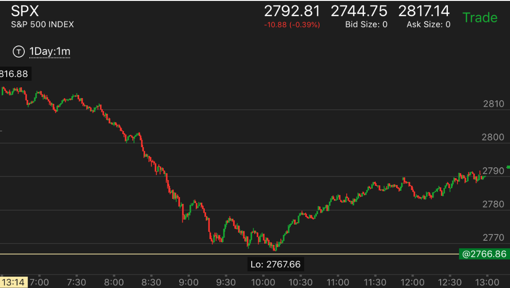
图示：
1. 它的启动走势一直很缓慢，用了一个多小时，才开始下跌。直到8：20才开始正式下跌。前面速度很快。不能算真空的一部分，
一直跌倒8：50才是第一浪，反弹后，再次下跌，这是第二浪。开始反弹了。
上涨的走势，在第一浪调整后，突然大跌一下，然后连续大涨。这样就到头了
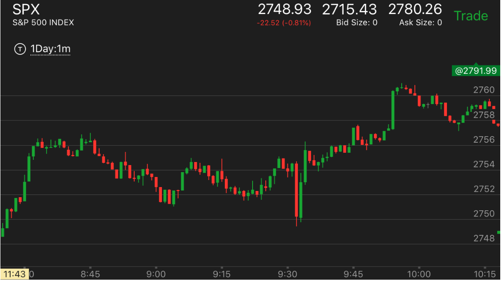
图示：8：30第一浪上涨.8：45出现了第一浪下跌。要注意下跌速度一开始就很快，
说明这个下跌只是回调，不是真实下跌，只能主要走势仍然上涨。在9：30，出现大幅下跌后到关键点，立刻反弹，
这个反弹本身分为两段，先是大涨，然后走缓慢，然后再次加速。这样也对应了，前面的两段下跌走势。
但是这个两段加起来，本身又和8:30的上涨形成两段走势。这样就是两段的嵌套走势。
第二浪加速下跌接近收盘也会反弹，反弹会持续到收盘后几分钟。
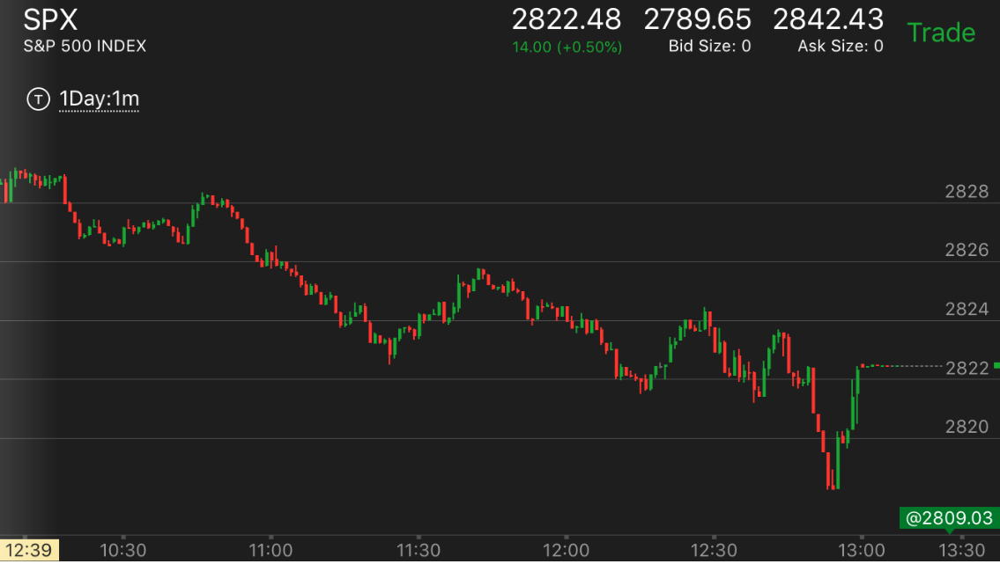
图示：12：20出现了比较大的反弹，它下跌后，再次反弹，然后加速下跌。
这时虽然接近收盘。但是可以看到因为是第二段下跌加速了。它最后还是反弹了。事实上，它收盘后的点超过了前面的反弹点
全天分析的例子
TOP
- 一个走势，总是分为两个阶段的。但是这两个阶段。时间长短不一定，幅度大小也不一定。
第二个阶段是否一定结束也不一定，可能持续到收盘才爆发结束。所以一定要仔细分析。
- 两段走势常常发生嵌套。
- 一个走势反转后，如果反向走势幅度很小。那么它是无法反转更大的走势的。只是让更大的走势暂时回调一下。
比如前面大跌，两段结束，开始上涨。上涨幅度很小。就出现两段走势，开始下跌。那么仍然处于升势。但是暂时
处于跌势。它可能出现双底，或者在比原来的低点更高的地方就开始走出两段下跌而反转了。
- 如果不容易判断两段走势到底是那一段，可以用速度来判断，一般第一段和第二段的连接的地方是快速回调。速度快。
但是总的幅度不大
- 如果看到第二浪没有到头就大幅回调，很可能第二浪已经到头了。这时应该观察，不要觉得第二浪没有到头而去捞底或顶。
- 判断走势的跌幅或者涨幅，可以根据真空的填补来判断。
- 判断一个两段走势的幅度，可以用它的反向走势的速度来判断。一般一个速度很快，另外一个速度就很慢。很慢的走势，
一般会跌破或者涨破前面的低点或者高点
一个主要走势是跌势，如果下跌后，反弹的幅度到了和原来差不多。或者只低两个点的地方，而且停留很久，
说明它的升势太大了。不能算是跌势的一部分。如果它反弹幅度明显很低，那么再次下跌就是两段走势的第二段。
两段走势的第二段或者第一段如果是缓慢运动走势，那么不能算两段走势，不会反转
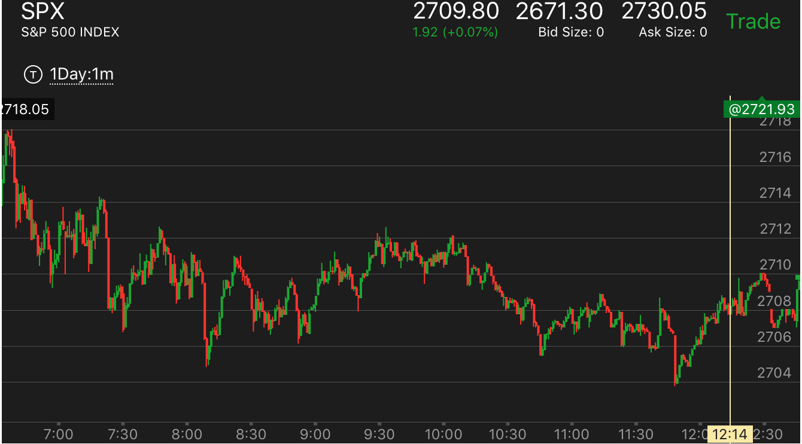
图示：
1. 一开始确定是跌势。它7：30下跌后，反弹，幅度很大，到了2712.接近前面的高点。说明还要下跌。下跌没有结束。
2. 8：10创新低后，再次反弹，它一开始反弹很大，但是回调也很大，这样不算大涨结束，到了9：00.它再次上涨到了2712，这样才是第二段
上涨，而且它涨幅接近前面的高点。说明上涨结束了。
3. 10：40开始再次下跌，反弹。这次反弹幅度明显比原来小。11：20冲高后，在高点停留很短时间，就立刻拉回。
这样不会就不是冲高了。到了11：40它大跌，创新低。这个就是两段下跌的第二段。加上它前面反弹不大。说明这个和前一个下跌是一部分。
这样就大盘就反转了。进入升势。
图示：
1. 开盘后，缓慢冲高，7：30回调。这个回调比较特别，它在低点没有停留，立刻反弹。后面也再也没有回来。而是依赖不断的拉回而走高。
2. 8：20的走势，要非常注意。它冲高后，稍微走低一点，然后走平。走平后，迅速大跌。反弹后，可以看到它反弹的幅度比下跌的幅度要小。
这一个就是示弱的走势。反而表示未来会冲破这个点。果然8：35， 它突破后大涨。
3. 9：00冲高后，立刻下来，然后长时间走平。这说明它不是顶部。但是它又真空。需要填补。它再10：30填补真空后，开始大涨。这个涨势
比较具有欺骗性。它看起来非常的缓慢。但是其实并不慢。它本身就是一个加速了。只要它见顶了。就是第二段升势了。这个时候，只能做空，不能做多。
而且它下跌的时候，至少要把真空填补了。这个真空再2779附近。所以至少也得跌倒那里。

图示：7：20开始上涨，7：25回调，这个是第一段。然后一路上涨。
这个是第二段。8：05稍微回调后，加速大涨，实际没有涨很多。然后缓慢的走低，这个就是顶部了。走势结束。
开始下跌。

图示：这个走势和上一个相似。但是有本质的区别。7：30到达顶部后，它缓慢下跌，
这个只能算头部的一部分。7：40一个大跌，但是其实跌幅不大，然后稍微反弹4分钟，继续大跌。这个算第一次下跌，而不是第二次。
和上面不同。因为它的反弹时间很短。和后面的下跌比起来不成比例。
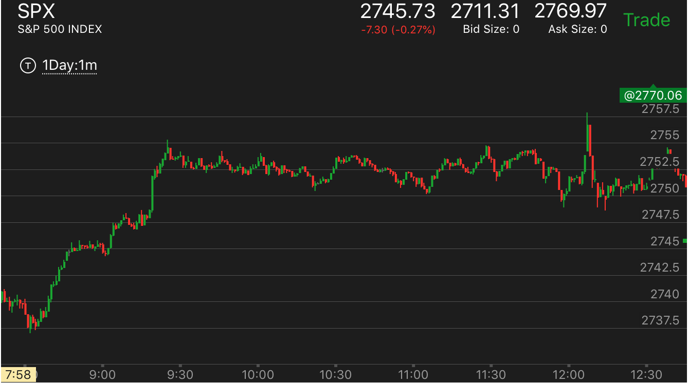
图示：8：30开始的大涨，已经是第二段上涨。如果加速见到顶部，就应该到头了。9：30分它连续大涨。
但是注意观察。它到了高点，立刻下来，没有走平。它在下跌前，没有大幅冲高。它是先大幅冲高，然后连续几个慢速度上涨。所以不是
见顶的走势。这个时候，应该放弃不做，注意观察。它可能最后冲高，也可能中间冲高后，大跌。
直到12：00它加速大涨，才算冲高到头了。第二段走势结束，然后大跌。
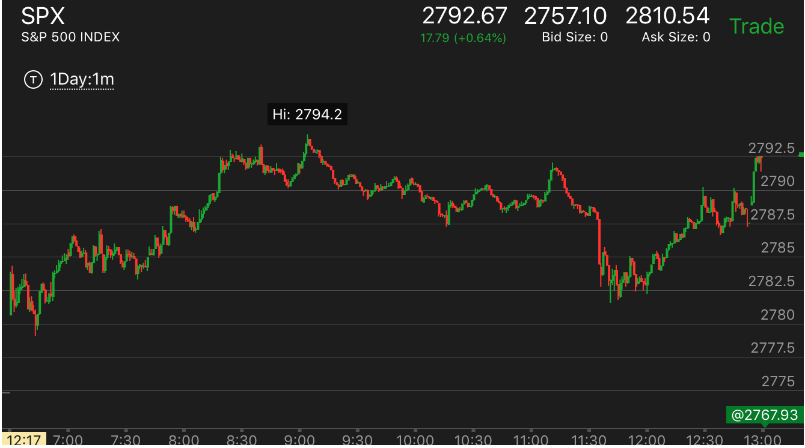
图示：开盘上涨，7：10是第一段。震荡后，从7：40开始第二段。8：40在底部短暂停留后，没有填补真空就快速上涨。
到达了顶部。9：00开始第一段下跌，9：40开始第二段下跌。10：10反弹，到10：40是第二段结束。11：00开始第二段上涨。结束。
11：10开始第一段下跌。11：30开始第二段下跌。大概在11：45结束。12：00开始上涨，第一浪在12：20结束。最后10分钟冲刺。
第一段走势回调的时候，上涨的形状决定它的涨幅
TOP
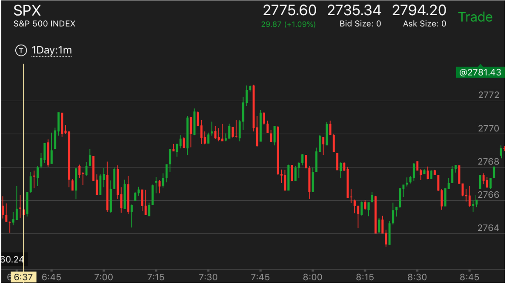
图示：6：50开始回调，7：15开始上涨。可以看到，它的第一浪就
到了前面的高点，然后走平震荡，这个说明它的上涨乏力。后来它果然在7：40上冲后，立刻下来。
上涨结束了。
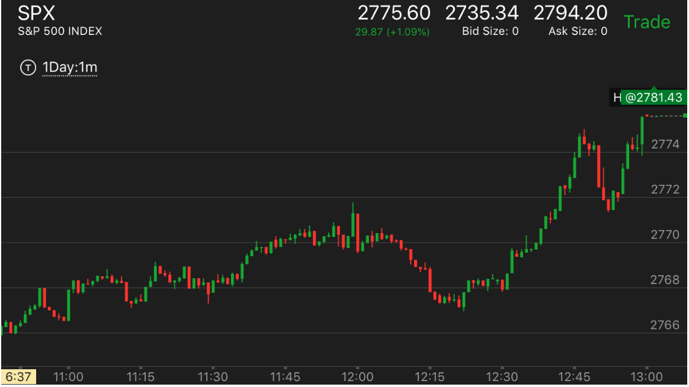
图示：12:00出现顶部，很快下来，和前面的上涨速度相比很快。
12：15走平，然后反弹，只反弹了一点，就开始走平。这样说明很强，会大涨。另外，12：00，出现
创高点后，立刻拉回，说明未来一定会超过这个点的。加上快收盘了，可以买期权来扩大收益。
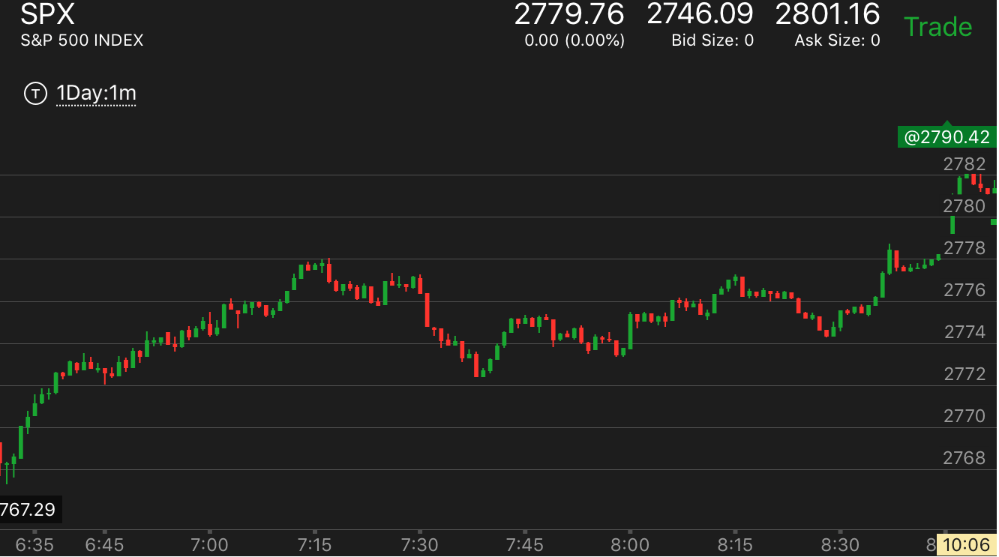
图示：7:15开始回调，7：40到底后，立刻反弹，但是不要着急。它反弹后，不断回撤，8：15
出现了稍微下跌后，走平的走势。这个会大跌。它下跌后，8：30反弹，然后走平。可以观察到，它反弹的幅度低于前面下跌的幅度。
这说明要大涨。